Recoup Physical Therapy
As one of the first classes I would take in the Informatics program, I was excited to begin the curriculum I would be immersed in for the next two years. However, the INFO 360 Design Thinking course was not at all what I was expecting. Instead of sitting through lectures instructing us on design concepts and acting as a basic fundamentals course, we immediately jumped in with user research exercises and the ideation process. We were eventually tasked with what would become our final project prompt; "design a product that helps someone in transition".
With a week to ideate, our team explored different options and in general attempted to answer the question of what a transition consists of. More than just a beginning, middle, and end, we quickly discovered transitions are much more complex than they appear on the surface. After deliberation of what specific transition to address, we settled on an issue that we had all been affected by in one way or another; recovery from a physical injury. Using health data from sources such as Apple Healthkit and wearables, we were confident we could craft a solution utilizing health data.
"How can health information be used to help create a more effective and personalized treatment plan for the recuperation process?"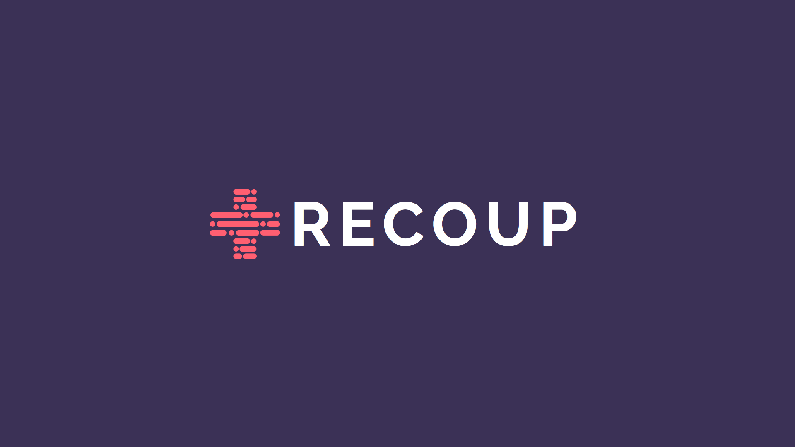
After preliminary research and feedback we determined there were four core pain points we wished to address;
- Unnecessary visits to the physical therapist
- Ineffective treatments plans
- Communication problems between therapist and patient
- Patient accountability for on-their-own exercises
We began brainstorming about how we could use data analytics, and other digital tools to tackle these problems. We quickly found that the smartphone would take center stage in our product.
- Telecommunication and increased injury knowledge to help answer quick questions
- Personalized plans that adapt based on individual needs and data collected throughout the course of treatment
- A built-in messaging application connecting therapists to their patients in an easy-to-use format
- Data monitoring by therapists prevent “skipping” or otherwise deviating from prescribed recuperation plans
This was a good start to our problem but looking ahead at the time constraints we faced, the decision was made to narrow our scope and focus specifically on student athletes. Our problem space now looked like this;
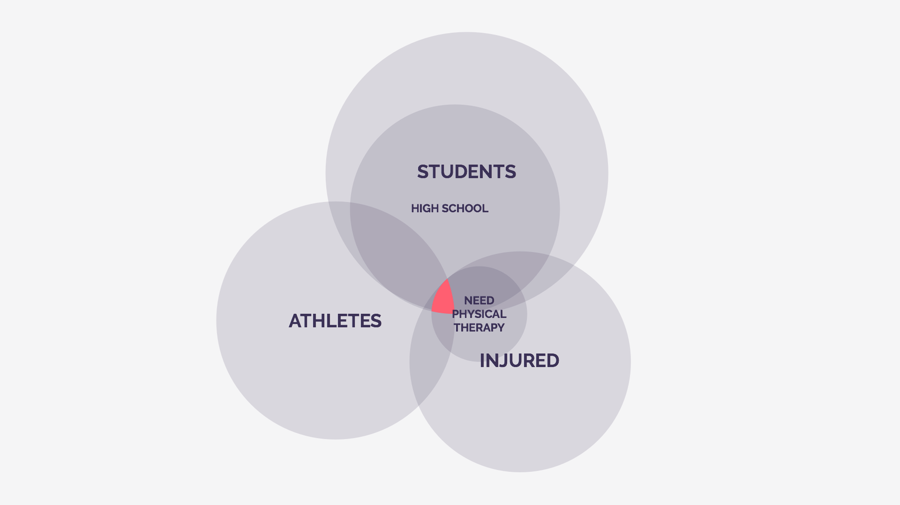
With a realistic target set and our general stakeholders identified, it was time to look more in-depth at who we would be using this product. We constructed three primary personas to help guide us through our project, and prevent us from losing sight of who this product was made for.
Terry Fox, High School Senior
Frustrations Terry has:
- He currently has the best physical therapist that he could ask for who has been working with him ever since he started running. However, since he loves to travel and does not want to get random physical therapist, whenever he is out of city, he is unable to get his report on his status
- He recently broke his ankle and has to go through physical therapy
- Whenever he is injured, he has to give up either therapy or the travel he loves
Sarah Husk, High School Sophomore
Frustrations Sarah has:
- Sarah is a runner, but recently has been unable to run as often due to an undiagnosed muscle issue
- Has performed physical therapy in the past, but sometimes doesn't do her prescribed exercises
- Has a big marathon she is training for in a few months, and hopes to be able to participate minus her running pain
Dr. Jason Edwards, Physical Therapist
Frustrations Jason has:
- Because he lives in such an isolated city, not as many people come to his practice
- He has to drive one hour to get to his work just for one patient who needs a routine 10 minute checkup
- Just as it takes him one hour to get to his office, it takes a long time for patients to get to him for just 10 minutes of checkup
We next began performing user research to get a deeper understanding about the particular problems that our stakeholders face. Due to the time constraints of this project, we were unable to work on the physician-side of this product, and instead shifted focus onto the young atheletes and what they would benefit from by using our product. While our personas guided us in the right direction, they were no substitute for going out and talking to people who fit our target audience. Learning about research methods in class, we chose stakeholder interviews and surveys as a way to gain sufficient feedback for Recoup. After performing interviews and a fifteen person survey, we had useful data to make more informed decisions off of:
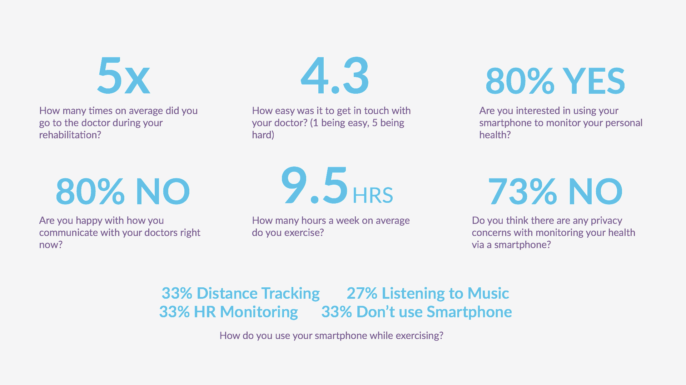"80% of participants weren't happy with how they communicate with their healthcare providers, and over 80% found it difficult to do so. Perhaps we are on to something."
This data confirms something we had suspected from the beginning; communication was a huge issue in physical therapy. With chat apps becoming ubiquitous in society, it seemed strange that something so critical (your health) was not given the same consideration. Although this class project required a digital and physical component, nearly everyone interpreted that as "make an app". However, we had very specific reasons for choosing to make an app:
Why we chose to make a mobile app
- Reduce cost of treatment plans
- Smartphones provide a way of consistent data collection
- Solve the communication problem between client and physician
NOT why we chose to make a mobile app
- It would be easiest to do
- Everyone else was doing it, so why not us
- Modern digital solutions only exist in app form
At this point in the project, we went our separate ways to tackle different objectives that were part of the final deliverable. I was tasked with creating the digital experience, as well as become the team visual designer; a role I was excited to take on.
The first thing I decided that needed to be done was sifting through our user feedback, and finding out what our stakeholders wanted in. After organizing such a list, it was apparent I had a lot of work to do.
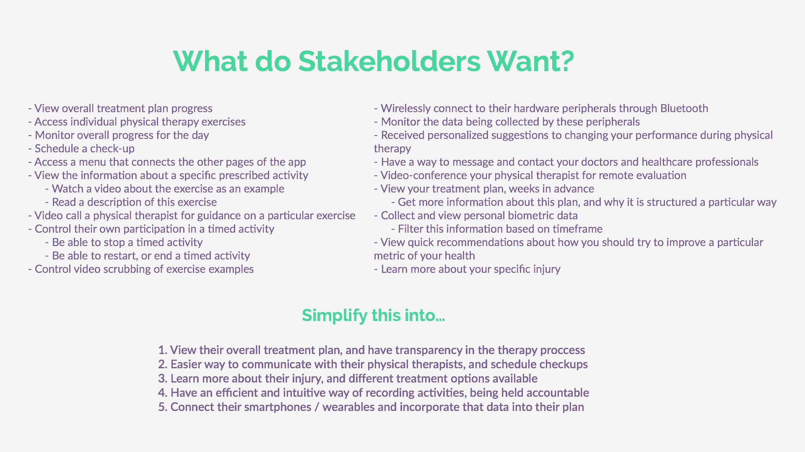With these five major points in mind, I began creating a rough flow of how this information would be laid out and organized. After a rough layout of application flow, I began experimenting with different layouts with wireframing. These are the designs that after careful review our group decided we should go forward with.
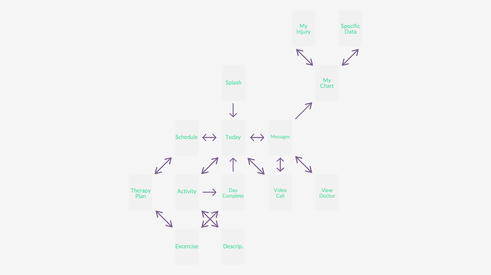 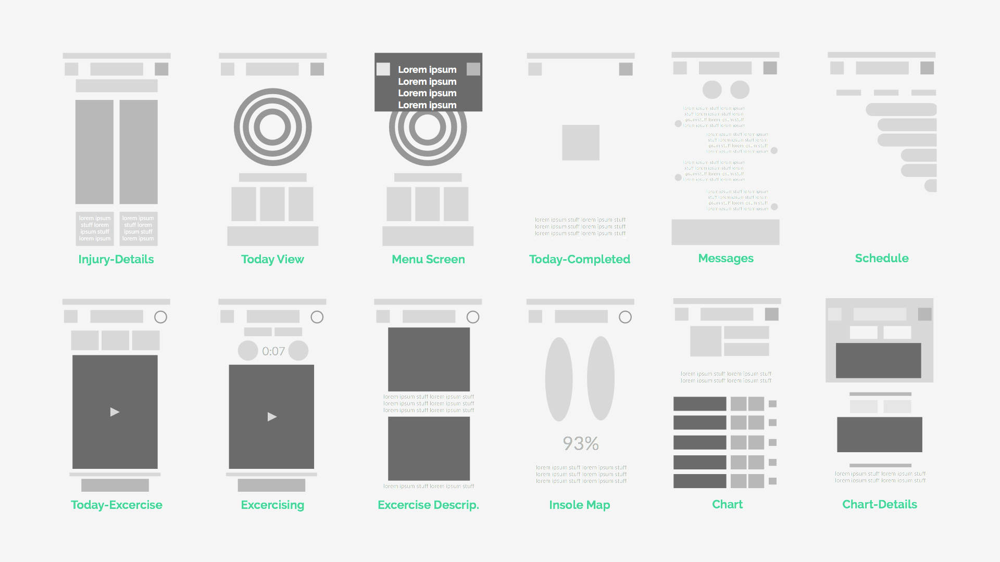Having no experience designing in the medical / health application space, I spent a good amount of time comparing design languages for applications in the personal health tracking space. Communication between physical therapists and clients would be a more mature version of messenger software, with the addition of video conferencing available. Through additional research, I was able to narrow down three types of applications I would construct a mood board from; personal health trackers, messaging apps, and scheduling dashboards. It was immediately apparent that bright, distinct colors would be used to differentiate data. A clean, readable typography would be used as well; this was first and foremost an information tracking application not one valued purely for aesthetic.
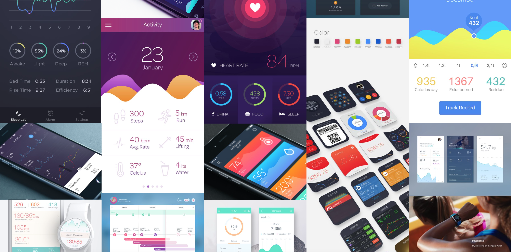 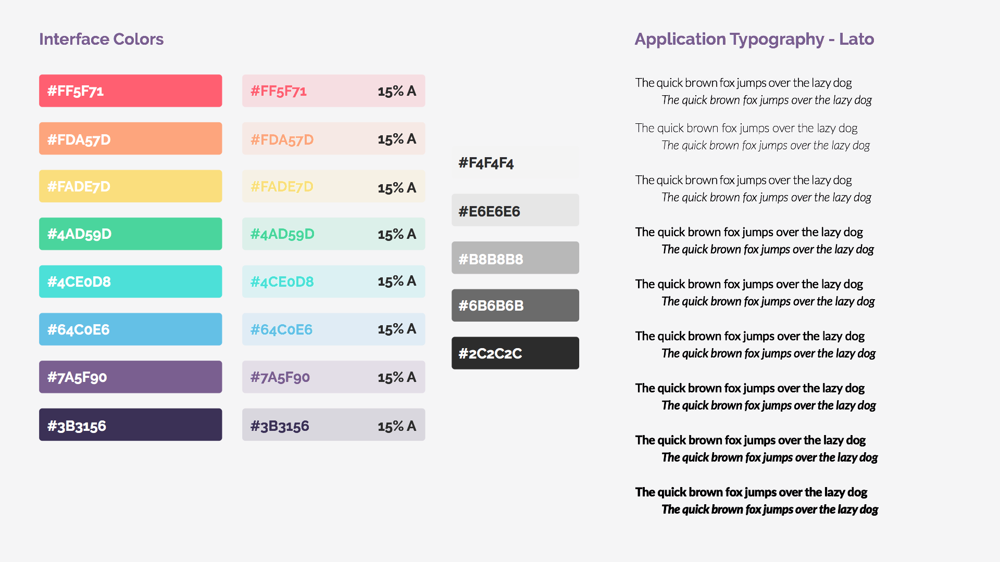 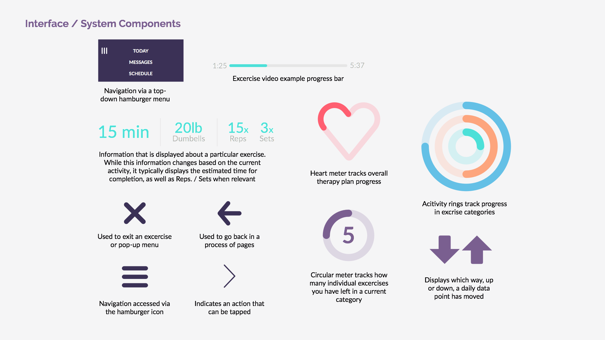The daily activity rings were a gamified aspect I really admired about the Apple Watch fitness app; they turned a quick look at the interface into a comprehensive overview about your daily goals. This was something that would align well with the goals we had set. I then took that concept a step further and created the heart meter; a visual indicator of your overall therapy progress. This was one of the most exciting aspects of the application thus far, because it dealt with the key issue of therapy never seeming to end. By giving stakeholders a way to track their progress at both micro and macro levels globally throughout the application, it would give them a constant reminder that their treatment would be over with soon.
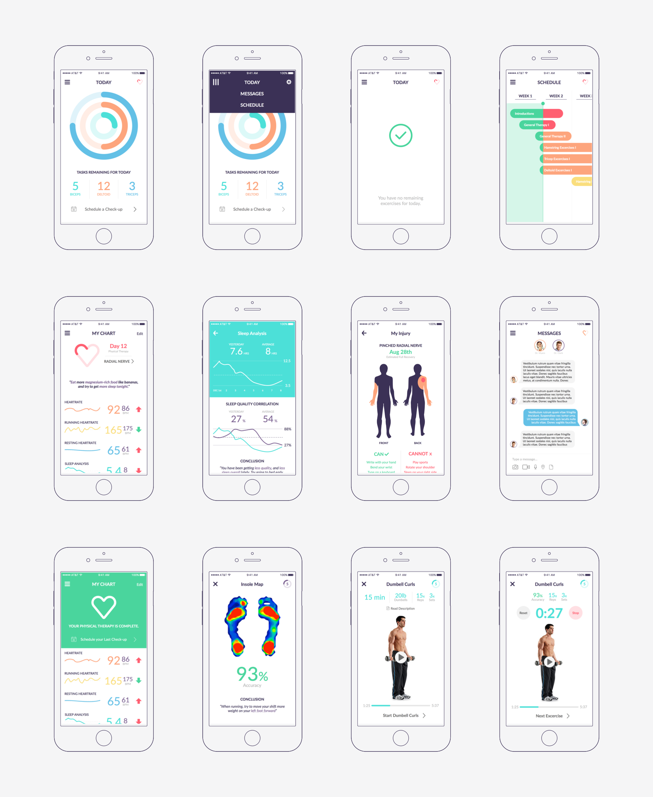 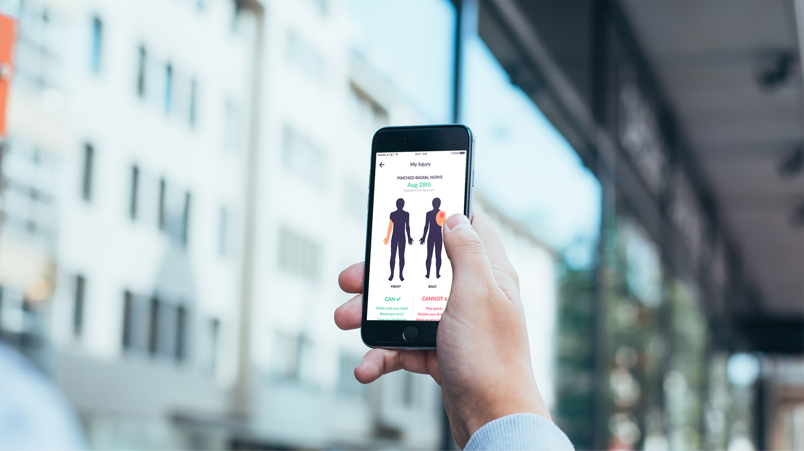 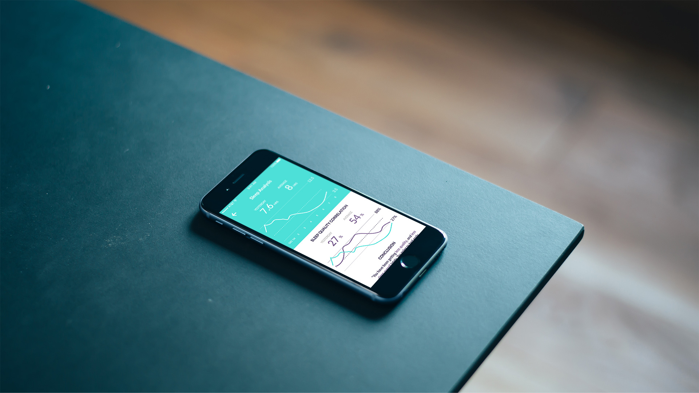 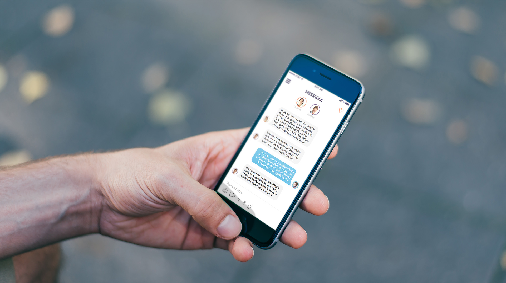 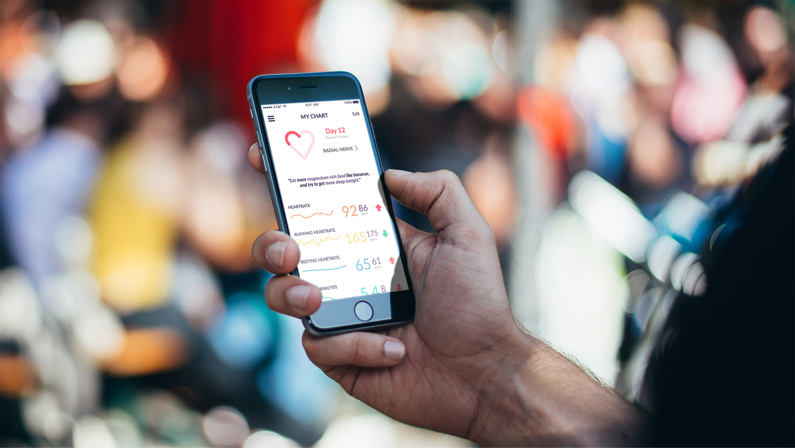 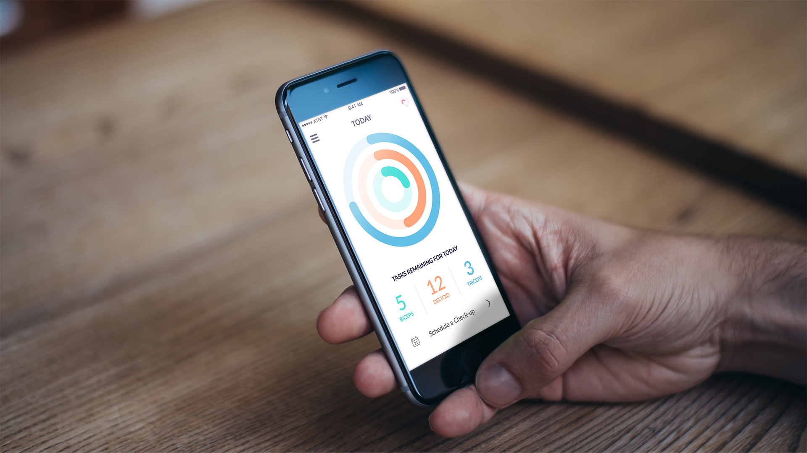 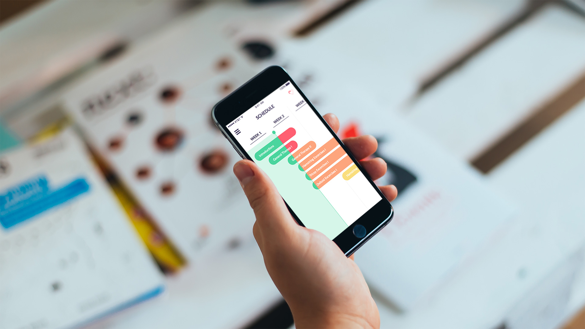Final thoughts
One of my regrets about this project was not being able to flesh out the physical therapist side of the application. As the scenario plays out right now, the patient communicates with a doctor over a facebook messenger-esque application, and is prescribed treatment options remotely from a computer. It would have been really interesting to work on the flip side of this product, and address the specific needs of the physical therapists as well. Scheduling and organization of information would have been the most important to their success, with emotion and personality more necesary on the patient side. I can envision this as a responsive application, especially useful on a tablet where it could ultimately replace paper patient charts.
Team
Maddy Austin
Jessica Ro
My Role
UI / UX Design
Visual Design
Information Architecture
Project Duration
8 Weeks